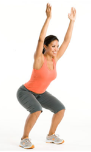

ေလ့က်င့္ခန္း ၇ (အဆင့္ျမင့္)

ေျခကို အနည္းငယ္ခြဲျပီ မတ္တပ္ရပ္ပါ။
ဒူးကို အနည္းငယ္ ေကြးထားပါ။
လက္ေတြကိုေတာ့ ခ်ထားပါ။
ထိုင္ခံုေပၚ ထိုင္သလိုမ်ိဳး ျပဳလုပ္ျပီး ခုန္ရပါမယ္။ ခုန္ေနစဥ္မွာ လက္ကို အေပၚ ေျမွာက္ပါ။
ျပန္ အက် ပံုစံက မခုန္ခင္က အတိုင္း ရွိရပါမယ္။
လက္ေတြကို ျပန္ခ်ပါ။
ဒီလို ခုန္ျခင္းကို ၁၂ ၾကိမ္ေလာက္ ျပဳလုပ္ပါ။